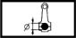

CONNECTING ROD ASSEMBLY
- Path
- Technical Data > Manufacturing data > 10 ENGINE > 1028 PISTONS AND CONNECTING RODS > CONNECTING ROD ASSEMBLY
- Kind
- technical data / specifications
- Applies to
- all engines; all production periods
- Interactive page
- https://sloeber94.github.io/elrnDB-a156/en/#/3233530
Applies to: all engines; all production periods
Big end diameter (mm) | Validity |  | ||
|---|---|---|---|---|
53.883 ÷ 53.923 | 1.9 JTD 8v | |||
Big end diameter (mm) | Validity | |||
53.897 ÷ 53.909 | 2.4 JTD 20v | |||
Big end diameter (mm) | Validity | |||
Category B | Category C | Classe A | ||
40.914 ÷ 40.934 | 40.908 ÷ 40.928 | 40.920 ÷ 40.940 | 1.6 TS | |
Maximum difference in weight between connecting rods (g.) | Validity |  | ||
± 5 | 1.8 TS 2.0 JTS [d] 3.2 V6 1.6 TS | |||
Big end diameter (mm) | Validity | |||
|---|---|---|---|---|
53.897 - 53.909 | 1.8 TS | |||
Big end diameter (mm) | Validity | |||
53.897 - 53.909 | [d] | |||
Big end diameter (mm) | Validity | |||
|---|---|---|---|---|
53.883 ÷ 53.923 | 2.4 JTD 10v | |||
Big end diameter (mm) | Validity | |||
55.511 - 55.524 | 2.5 V6 | |||
Big end diameter (mm) | Validity | |||
|---|---|---|---|---|
53.897 - 53.909 | 1.9 JTD 16v | |||
Connecting rod weight difference (g) | Validity | | ||
± 2.5 | 1.9 JTD 8v 2.4 JTD 10v | |||
Connecting rod weight difference (g.) | Validity | |||
± 2.5 | 1.9 JTD 16v | |||